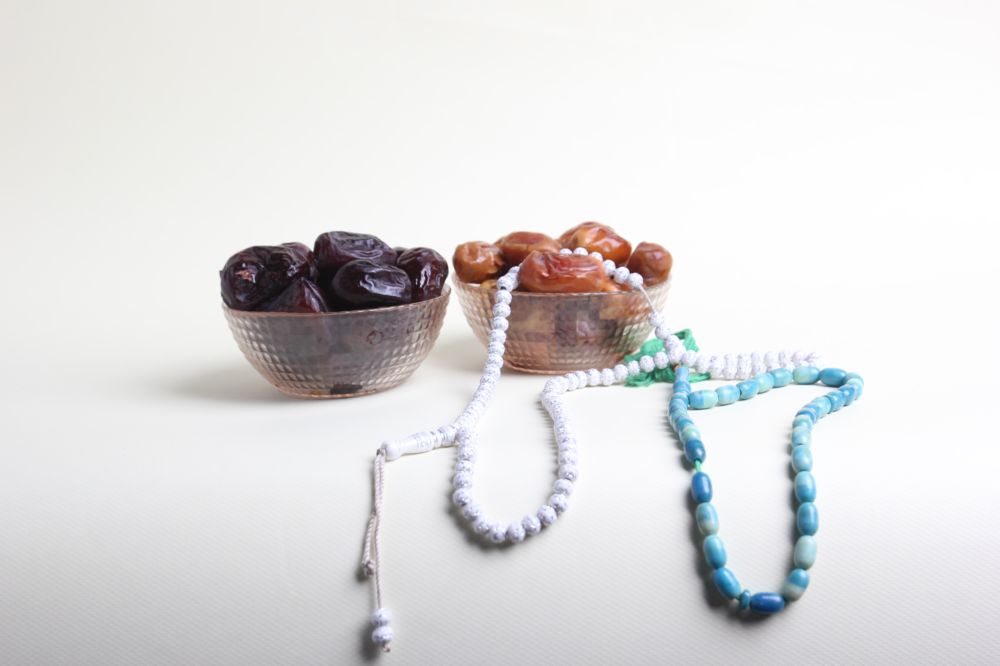

BENEFITS OF DATES

Dates are a great alternative for people who have a sweet tooth but don’t want to ruin their health in the process. Dates can be consumed in many different ways without having to worry about getting added calories from the sweet taste. Dates have a lot of fiber, vitamins, and minerals that can benefit your health in a number of ways. It should come as no surprise that dates are one of the healthiest fruits you can eat.